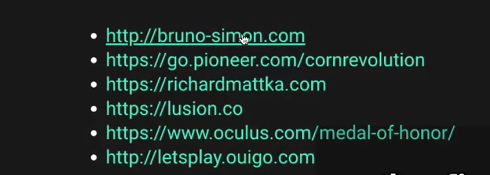

2_什么是 webgl
作者做的一些 threejs 案例


3_basic_scene
从官网下载 threejs, 然后复制里面的 threejs min 到项目文件夹下


scene

const scene = new THREE.Scene();
objects


// 创建objects(一个红立方体)
const geometry = new THREE.BoxGeometry(1, 1, 1);

Material (材质细节)

color: 颜色

// 材质细节
const material = new THREE.MeshBasicMaterial({ color: 0xff0000 });
Mesh

// 网格
const mesh = new THREE.Mesh(geometry, material);
// 添加网格到画布
scene.add(mesh);
Camera

field 可见范围(角度?)

aspect ratio 纵横比

// Sizes 视窗大小
const sizes = {
width: 800,
height: 600,
};
// 相机(perspective: 透视)
const camera = new THREE.PerspectiveCamera(75, sizes.width / sizes.height);
scene.add(camera);
renderer 渲染器,渲染图像


// 要被渲染的画布
const canvas = document.querySelector(".webgl");
// 渲染器
const renderer = new THREE.WebGLRenderer({
canvas: canvas,
});
// 设置渲染器大小
renderer.setSize(sizes.width, sizes.height);
// 渲染
renderer.render(scene, camera);
默认情况下,相机和对象都在 scene 中心,什么都看不到,要调整相机位置
// 向屏幕外移动
camera.position.z = 3;
over

// console.log(THREE);
// 场景,一个画布,容器...
const scene = new THREE.Scene();
// 创建objects(一个红立方体)
const geometry = new THREE.BoxGeometry(1, 1, 1);
// 材质细节
const material = new THREE.MeshBasicMaterial({ color: 0xff0000 });
// 网格
const mesh = new THREE.Mesh(geometry, material);
// 添加网格到画布
scene.add(mesh);
// Sizes 视窗大小
const sizes = {
width: 800,
height: 600,
};
// 相机(perspective: 透视)
const camera = new THREE.PerspectiveCamera(75, sizes.width / sizes.height);
// 向屏幕外移动
camera.position.z = 3;
// 向屏幕右侧移动
// camera.position.x = 2
// 向屏幕上侧移动
// camera.position.y = 2
scene.add(camera);
// 要被渲染的画布
const canvas = document.querySelector(".webgl");
// 渲染器
const renderer = new THREE.WebGLRenderer({
canvas: canvas,
});
// 设置渲染器大小
renderer.setSize(sizes.width, sizes.height);
// 渲染
renderer.render(scene, camera);

<!DOCTYPE html>
<html lang="en">
<head>
<meta charset="UTF-8" />
<meta http-equiv="X-UA-Compatible" content="IE=edge" />
<meta name="viewport" content="width=device-width, initial-scale=1.0" />
<title>03 - Basic Scene</title>
</head>
<body>
<!-- 画布,用于渲染threejs图像 -->
<canvas class="webgl"></canvas>
<!-- 导入threejs -->
<script src="./three.min.js"></script>
<script src="./script.js"></script>
</body>
</html>

4_webpack
下载 threejs 官网 webpack 章节示例


npm install
yarn dev


5_tranforms_objects
变换对象有 4 个属性

position 移动

正方体向上移动了,我们看到它的底部
mesh.position.y = 1;

# 放在渲染之前才生效
mesh.position.x = 0.7
mesh.position.y = -0.6
mesh.position.z = 1

vector3

// position向量的长度
console.log(mesh.position.length());

// 和某个位置的距离
console.log(
"和某个位置的距离: ",
mesh.position.distanceTo(new THREE.Vector3(0, 1, 2))
);
console.log("和相机的距离: ", mesh.position.distanceTo(camera.position));

// 回到向量长为1的位置
console.log("当前位置: ", mesh.position.length());
mesh.position.normalize();

// mesh.position.x = 0.7
// mesh.position.y = -0.6
// mesh.position.z = 1
mesh.position.set(0.7, -0.6, 1);
axesHelper

// axis helper 坐标轴
const axisHelper = new THREE.AxesHelper(); // 轴长为1
// const axisHelper = new THREE.AxesHelper(3) // 轴长为3

scale 缩放

// 每条边的长度缩放
// mesh.scale.x = 2 // 放大2倍
// mesh.scale.y = 0.5 // 缩小为0.5
// mesh.scale.z = 0.5 // 缩小为0.5
mesh.scale.set(2, 0.5, 0.5);

rotate 旋转
有 rotation 和 quaternion 两种旋转,更新一个,就自动更新另一个

// 旋转
mesh.rotation.y = 0.25;
// mesh.rotation.y = 3.14159 // 转半圈
// mesh.rotation.y = Math.PI / 2 // 转1/4圈
mesh.rotation.x = Math.PI * 0.25;
mesh.rotation.z = Math.PI * 0.25;

有时，旋转了某个轴，则另一个轴的位置变了，旋转另一个轴会发生和预期不同的结果；有时，旋转不生效，发生了方向锁
调整旋转的次序，谁最优先
// 旋转
// 旋转的次序,声明在旋转动作前才生效
mesh.rotation.reorder("YXZ");
mesh.rotation.y = 0.25;
// mesh.rotation.y = 3.14159 // 转半圈
// mesh.rotation.y = Math.PI / 2 // 转1/4圈
mesh.rotation.z = Math.PI * 0.25;
mesh.rotation.x = Math.PI * 0.25;

quaternion 可以更好地解决问题
lookat
// 看3D对象
// camera.lookAt(new THREE.Vector3(3, 0, 0))
camera.lookAt(mesh.position); // 看向mesh


import "./style.css";
import * as THREE from "three";
// Canvas
const canvas = document.querySelector("canvas.webgl");
// Scene
const scene = new THREE.Scene();
/**
* Objects
*/
const geometry = new THREE.BoxGeometry(1, 1, 1);
const material = new THREE.MeshBasicMaterial({ color: 0xff0000 });
const mesh = new THREE.Mesh(geometry, material);
// 位移
// mesh.position.x = 0.7
// mesh.position.y = -0.6
// mesh.position.z = 1
mesh.position.set(0.7, -0.6, 1);
// 每条边的长度缩放
// mesh.scale.x = 2 // 放大2倍
// mesh.scale.y = 0.5 // 缩小为0.5
// mesh.scale.z = 0.5 // 缩小为0.5
mesh.scale.set(2, 0.5, 0.5);
// 旋转
// 旋转的次序,声明在旋转动作前才生效
mesh.rotation.reorder("YXZ");
mesh.rotation.y = 0.25;
// mesh.rotation.y = 3.14159 // 转半圈
// mesh.rotation.y = Math.PI / 2 // 转1/4圈
mesh.rotation.z = Math.PI * 0.25;
mesh.rotation.x = Math.PI * 0.25;
scene.add(mesh);
// axis helper 坐标轴
const axisHelper = new THREE.AxesHelper(); // 轴长为1
// const axisHelper = new THREE.AxesHelper(3) // 轴长为3
scene.add(axisHelper);
// position向量的长度
console.log(" position向量的长度: ", mesh.position.length());
// 和某个位置的距离
console.log(
"和某个位置的距离: ",
mesh.position.distanceTo(new THREE.Vector3(0, 1, 2))
);
// 回到向量长为1的位置
// mesh.position.normalize()
console.log("当前位置: ", mesh.position.length());
/**
* Sizes
*/
const sizes = {
width: 800,
height: 600,
};
/**
* Camera
*/
const camera = new THREE.PerspectiveCamera(75, sizes.width / sizes.height);
camera.position.z = 3;
// camera.position.y = 1
// camera.position.x = 1
scene.add(camera);
// 看3D对象
// camera.lookAt(new THREE.Vector3(3, 0, 0))
camera.lookAt(mesh.position); // 看向mesh
console.log("和相机的距离: ", mesh.position.distanceTo(camera.position));
/**
* Renderer
*/
const renderer = new THREE.WebGLRenderer({
canvas: canvas,
});
renderer.setSize(sizes.width, sizes.height);
renderer.render(scene, camera);
group 组，将一些对象加到组里，方便统一处理和修改


import "./style.css";
import * as THREE from "three";
// Canvas
const canvas = document.querySelector("canvas.webgl");
// Scene
const scene = new THREE.Scene();
// 组
const group = new THREE.Group();
scene.add(group);
// 几何体
const cube1 = new THREE.Mesh(
new THREE.BoxGeometry(1, 1, 1),
new THREE.MeshBasicMaterial({ color: 0xff0000 })
);
group.add(cube1);
const cube2 = new THREE.Mesh(
new THREE.BoxGeometry(1, 1, 1),
new THREE.MeshBasicMaterial({ color: 0x00ff00 })
);
cube2.position.x = -2;
group.add(cube2);
const cube3 = new THREE.Mesh(
new THREE.BoxGeometry(1, 1, 1),
new THREE.MeshBasicMaterial({ color: 0x0000ff })
);
cube3.position.x = 2;
group.add(cube3);
// 可以对group里的对象统一变换
group.position.y = 1;
group.scale.y = 2;
group.rotation.y = 1;
// axis helper 坐标轴
const axisHelper = new THREE.AxesHelper(); // 轴长为1
// const axisHelper = new THREE.AxesHelper(3) // 轴长为3
scene.add(axisHelper);
/**
* Sizes
*/
const sizes = {
width: 800,
height: 600,
};
/**
* Camera
*/
const camera = new THREE.PerspectiveCamera(75, sizes.width / sizes.height);
camera.position.z = 3;
// camera.position.y = 1
// camera.position.x = 1
scene.add(camera);
// 看3D对象
// camera.lookAt(new THREE.Vector3(3, 0, 0))
/**
* Renderer
*/
const renderer = new THREE.WebGLRenderer({
canvas: canvas,
});
renderer.setSize(sizes.width, sizes.height);
renderer.render(scene, camera);